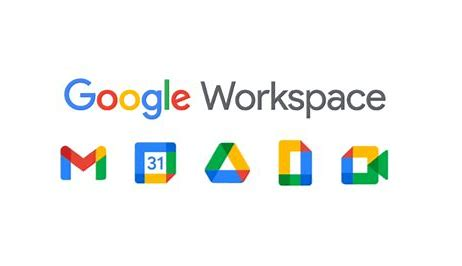

Gestión Tecnológica Educativa
Bienvenido a nuestra plataforma donde la educación se une con la tecnología. Aquí encontrarás herramientas para mejorar la administración, el control financiero, la gestión de equipos tecnológicos y la integración con otras plataformas educativas. Diseñado para instituciones modernas que buscan eficiencia y transparencia.
📊 Transparencia y Control Financiero
En TECHACADEMY, creemos que cada centavo invertido en tecnología educativa debe rendir frutos. Nuestra plataforma de contabilidad facilita un seguimiento claro, ordenado y en tiempo real de todos los gastos relacionados con recursos tecnológicos.

Presupuestos por proyecto
Gestiona y monitorea gastos específicos por aula, sede o plan institucional. Visualiza de forma clara el destino de cada inversión.

Registro de adquisiciones
Carga facturas, contratos de licencias, compras de hardware y servicios tecnológicos con facilidad. Todo en un solo lugar.

Informes listos para auditoría
Genera informes detallados por rango de fechas, tipo de recurso o área académica. Exportables en PDF o Excel.
📦 ¿Qué recursos tecnológicos tenemos?
El inventario digital permite visualizar de forma clara qué equipos hay disponibles en cada institución: computadoras, tablets, proyectores, impresoras y más. Además, se puede conocer su estado, ubicación y responsable asignado.
- Consulta en tiempo real de dispositivos activos.
- Historial de mantenimiento y reparaciones.
- Evita pérdidas y mejora la organización.

🔗 Conectado con lo que ya usas
Nuestra plataforma se integra fácilmente con herramientas que ya utilizan las escuelas y colegios: plataformas virtuales de enseñanza, sistemas de notas, contabilidad institucional y más.
- Compatible con Google Workspace, Microsoft 365, Moodle y más.
- Sincronización automática de datos y usuarios.
- Ahorra tiempo y evita errores al evitar duplicación de tareas.

📈 Datos que ayudan a mejorar
Las estadísticas permiten tomar decisiones informadas. Descubre cuántos equipos están en uso, cuánto se invierte en tecnología, qué áreas requieren más apoyo técnico, y más.
- Gráficos intuitivos sobre estado y uso del inventario.
- Reportes mensuales de gastos por sede o nivel educativo.
- Evaluación del impacto de la tecnología en el aprendizaje.